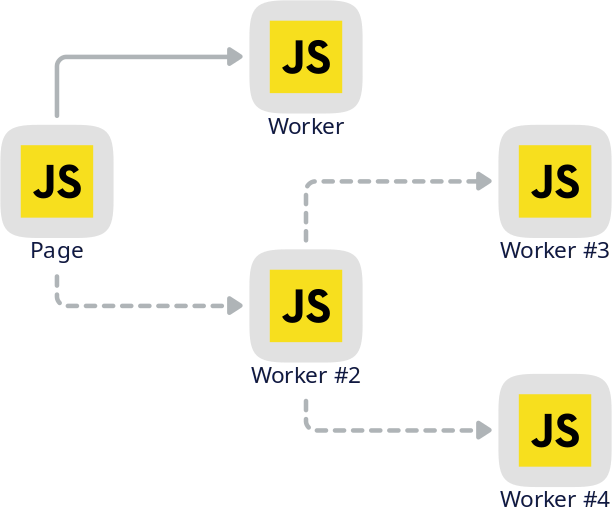
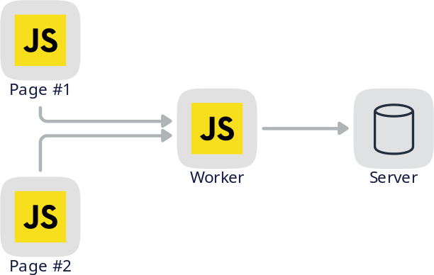

A Comparison of Web Workers
Thomas Hunter II
CEO, Working on Radar.Chat
Adapted from Multithreaded JavaScript:
bit.ly/3mvoSjp
Basics
And a quick history lesson.
History
It is the nature of JavaScript – and its
ecosystem – to be single-threaded.
- Presentation from perspective of multithreading
- TODO - message passing
- TODO - shared memory
What is a Dedicated Worker?
- Dedicated Workers have exactly one parent
- Can be loaded as a hierarchy
- Each worker is a new JavaScript environment

Dedicated Workers in the Page
console.log('hello from main.js');
const worker = new Worker('worker.js');
worker.onmessage = (msg) => {
console.log('from worker:', msg.data);
};
worker.postMessage('message to worker');
console.log('hello from end of main.js');
Dedicated Workers in the Worker
// worker.js
console.log('hello from worker.js');
self.onmessage = (msg) => {
console.log('from main:', msg.data);
// perform a heavy calculation
postMessage('message from worker');
};
Dedicated Worker Output
| Log | Location |
|---|
| hello from main.js |
main.js |
| hello from end of main.js |
main.js |
| hello from worker.js |
worker.js |
| from main: message to worker |
worker.js |
| from worker: message from worker
| main.js |
Why use a Dedicated Worker?
- Gives access to multi-threading
- Offload CPU intensive work
- Prevent scroll-jank
- Note: Worker dies when parent dies
What is a Shared Worker?
- Shared Workers can have multiple parents
- Allows communication across same-origin windows
Shared Workers in the Page(s)
// red.html and blue.html
const worker = new SharedWorker('shared.js');
worker.port.onmessage = (event) => {
console.log('EVENT', event.data);
};
worker.port.postMessage('hello, world');
Shared Workers in the Worker
const ID = Math.floor(Math.random() * 999999);
console.log('shared.js', ID);
const ports = new Set();
self.onconnect = (event) => {
const port = event.ports[0];
ports.add(port);
console.log('CONN', ID, ports.size);
port.onmessage = (event) => {
console.log('MESSAGE', ID, event.data);
for (let p of ports) {
p.postMessage([ID, event.data]);
}
};
};
Shared Worker Output
| Log | Location |
|---|
| shared.js 123456 | shared.js |
| CONN 123456 1 | shared.js |
| CONN 123456 2 | shared.js |
| MESSAGE 123456 hello, world | shared.js |
| EVENT [ 123456, "hello, world" ] | red.html |
| EVENT [ 123456, "hello, world" ] | blue.html |
Why use a Shared Worker?
- You need to facilitate comms across pages
- You want variable contexts to outlive a page
- ❌ You don't need to support Safari
- TODO:
BroadcastChannel as an alternative
- Note: Worker dies when last parent dies
What is a Service Worker?
- The most complex of the Web Workers
- Intercept / proxy requests made to server
- Can have zero parents, run in background
- Can share state between same-origin windows

Service Workers in the Page(s)
// main.js
navigator.serviceWorker.register('/sw.js',
scope: '/' });
navigator.serviceWorker.oncontrollerchange = () => {
console.log('controller change');
};
async function makeRequest() {
const result = await fetch('/data.json');
const payload = await result.json();
console.log(payload);
}
Service Workers in the Worker
// sw.js part 1
let counter = 0;
self.oninstall = (event) => {
console.log('service worker install');
};
self.onactivate = (event) => {
console.log('service worker activate');
event.waitUntil(self.clients.claim());
};
Service Workers in the Worker
// sw.js, part 2
self.onfetch = (event) => {
console.log('fetch', event.request.url);
if (event.request.url.endsWith('/data.json')) {
counter++;
return void event.respondWith(
new Response(JSON.stringify({counter}), {
headers: { 'Content-Type': 'text/json' }
})
);
}
// fallback to normal HTTP request
event.respondWith(fetch(event.request));
};
Service Worker Output
TODO
Why use a Service Worker?
- Cache network assets when offline
- Perform background syncs of updated content
- Push notifications
- Support "Add to Homescreen" on Android / iOS
- Note: Worker might die when last parent dies
Conclusion
| Dedicated | Shared | Service |
|---|
| Thread | ✅ | ✅ | ✅ |
| No TLS | ✅ | ✅ | ❌ |
| Pages | 1..1 | N..1 | N..0 |
| Safari | ✅ | ❌ | ✅ |
| Proxy | ❌ | ❌ | ✅ |
| Dies | With Parent | Last Parent | Tricky |